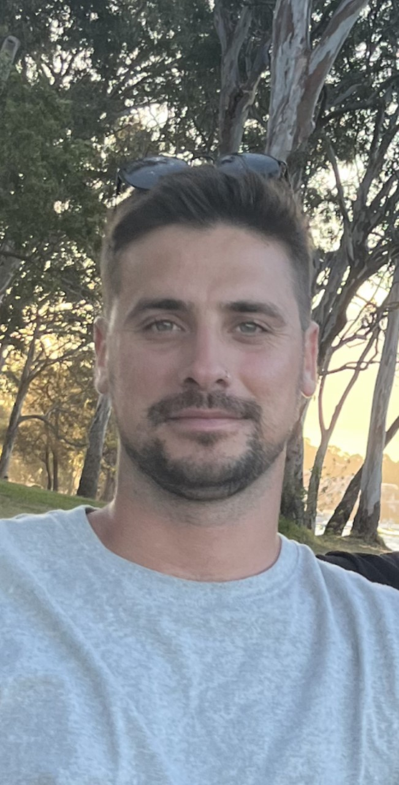

Mathew Mihaljevic

Summary
My name is mathew I'm 30 years old and have been a capenter most my life. I have a passion for codding and would like to turn it into a career.
Education
- Certificate 3 in carpentry and joinery.
Experience
Apprentice joiner
2010 - 2014
- Basic learing of hand & power tools
- Set out of joinery
- Understanding detailed plans
- leveling & installing basic joinery
tradesman
2015 - 2019
- Installing detailed joinery
- impecable eye for detail
- help training Apprentice's
- Cutting and constructing materials
Supervisor
2020 - 2023
- Consulting with project managers and clients
- Interpreting architectural drawings and planning materials to be used
- managing a group of tradesmen daily
- quality controll
Work Ethic
- appearance
- attendance
- attitude
- respect and teamwork
- communication
- organizational skills
- cooperation
Other